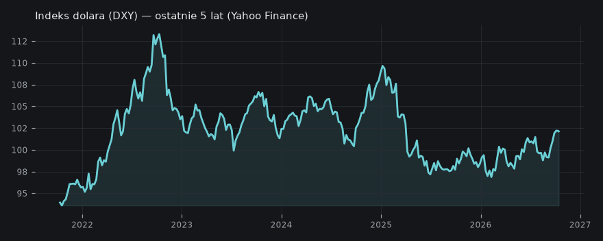

Rynek 24/7 onchain: Perps na RWA jako nowa luka w finansachdraftsprawdź przed publikacją
— Onchainowe instrumenty pochodne (perps) na aktywa z realnego świata (RWA) mogą wypełnić luki w płynności tradycyjnych rynków, oferując handel 24/7.
Rynek 24/7 onchain: Perps na RWA jako nowa luka w finansach
Platformy takie jak Lighter rozwijają rynek instrumentów pochodnych (perps) na tokenizowane aktywa z realnego świata (RWA), aby sprostać zapotrzebowaniu na ciągłą płynność i zarządzanie ryzykiem.
✍️ Draft na X
Kontrola redakcyjna: sprawdź przed publikacją
Temat opiera się na jednym materiale; sprawdź kluczową tezę w źródle przed publikacją.
🚨 Rynki onchainowe nie tylko "mogą" wypełnić luki TradFi. One JUŻ TO ROBIĄ.
Wg Forward Guidance, wolumen na perpsach na tokenizowane RWA na Lighter urósł o 4.2x od czerwca, dobijając do $3.76 mld na koniec września.
To nie jest teoria, to jest NAPRAWDĘ.
---
Problem? Tradycyjne rynki akcji, poza godzinami, tracą płynność. Nie masz jak zarządzać ryzykiem w weekendy czy święta.
To spora luka dla kogoś, kto chce hedgować portfel 24/7.
I tu wjeżdża krypto.
---
Perpsy na RWA, np. na Lighter, oferują handel 24/7. Możesz shortować, longować, używać dźwigni i cross-marginingu między różnymi aktywami.
Większa efektywność kapitałowa, większa elastyczność.
---
W skrócie: tam, gdzie boomerzy z Wall Street idą spać i blokują płynność, onchainowe platformy dają radę.
Powstaje nowy, strukturalny popyt i REALNY użytek dla krypto.
Nie jest to porada inwestycyjna.
Tradycyjne rynki finansowe, takie jak giełdy akcji, działają w ograniczonych godzinach, co tworzy luki w płynności i utrudnia zarządzanie ryzykiem, szczególnie poza sesjami handlowymi. Technologia blockchain umożliwia handel bez przerwy, 24 godziny na dobę, 7 dni w tygodniu, co jest znaczącą przewagą. Nowe protokoły próbują wykorzystać tę cechę.
Kto co mówi
Forward Guidance: Rynki onchain, oferujące handel 24/7, mogą wypełnić znaczącą lukę płynności na tradycyjnych rynkach akcji, gdzie poza godzinami handlu brakuje możliwości efektywnego zarządzania ryzykiem. Produkty pochodne (perps) na tokenizowane aktywa z realnego świata (RWA) na platformach takich jak Lighter pozwalają na wykorzystanie dźwigni i cross-marginingu, zwiększając efektywność kapitałową i dostęp do aktywów, które nie są łatwo dostępne na tradycyjnych rynkach, np. poza godzinami handlu tradycyjnych giełd.
(Robinhood & Lighter: Why Wall Street Is Moving Onchain)
Kanał Forward Guidance podkreśla, że dzięki rynkom onchain inwestorzy mogą hedgingować i zarządzać ryzykiem nawet w weekendy i święta, niwelując luki z tradycyjnych rynków.
Co z tego wynika
Rozwój onchainowych perps na RWA może stworzyć nowe możliwości dla inwestorów szukających elastyczności i dostępu do płynności poza standardowymi godzinami, potencjalnie zmieniając sposób zarządzania portfelem i ekspozycją na ryzyko.
Paradoks płynności: wyższe stopy procentowe mogą zwiększać dostępność kapitału na rynkach długu
Pomimo powszechnego przekonania, że wzrost stóp procentowych zmniejsza płynność, w amerykańskim systemie finansowym, gdzie duża część długu jest krótkoterminowa, wyższe stopy mogą ułatwiać refinansowanie i zwiększać dostępność kapitału dla firm, szczególnie dzięki tokenizacji.
✍️ Draft na X
Kontrola redakcyjna: sprawdź przed publikacją
Temat opiera się na jednym materiale; sprawdź kluczową tezę w źródle przed publikacją.
🚨NIEPOPULARNA OPINIA🚨 Wyższe stopy procentowe mogą... ZWIĘKSZAĆ płynność na rynkach długu! Brzmi jak herezja, ale wg The Wolf Of All Streets (Scott Melker) w USA to realny mechanizm.---
W tradycyjnej ekonomii podwyżki stóp to sygnał do schłodzenia. Ale w amerykańskim systemie, gdzie sporo długu jest krótkoterminowe, firmy regularnie muszą go refinansować.---
Przy wyższych stopach, inwestorzy chętniej wchodzą w nowe emisje długu, bo liczą na lepszy zwrot. To dla firm okazja, żeby ten krótki dług 'przewalić' i znaleźć nowych wierzycieli.---
Do tego dochodzi tokenizacja. Dzięki niej dług staje się bardziej dostępny i łatwiejszy w handlu. Firmy nagle mają dostęp do większej puli kapitału, bo rynek jest 'płynniejszy'.---
To podważa intuicję, ale w systemie mocno opartym na długu, ten 'paradoks płynności' działa. Inny mechanizm, inne konsekwencje. Nie jest to porada inwestycyjna.
**Aktualizacja — co się zmieniło od wczoraj**
Wczoraj dyskut
poprzednio: Rząd USA manipuluje danymi inflacji i rynku pracy, aby ukryć problemy gospodarcze (2026-10-12)
Kto co mówi
The Wolf Of All Streets (Scott Melker): W amerykańskim systemie finansowym, opartym na długu i nieruchomościach, podnoszenie stóp procentowych może paradoksalnie zwiększać płynność dla niektórych aktywów. Dzieje się tak, ponieważ duża część długu jest krótkoterminowa i może być łatwiej refinansowana przy wyższych stopach, co w połączeniu z tokenizacją umożliwia firmom dostęp do zwiększonej ilości kapitału.
(Bitcoin Flushes $800M In Leverage And Bounces Back Above $83K)
Scott Melker wskazuje na potencjalnie kontr-intuicyjny efekt polityki monetarnej, gdzie podnoszenie stóp procentowych niekoniecznie oznacza natychmiastowe zacieśnienie płynności w każdym segmencie rynku długu.
Indeks dolara (DXY) — ostatnie 5 lat (Yahoo Finance)

Co z tego wynika
Zrozumienie złożonych interakcji między polityką monetarną a strukturą długu jest kluczowe dla oceny rzeczywistego wpływu podwyżek stóp procentowych na rynki finansowe i dostępność kapitału.
Potęga Mag 7: jak giganci technologiczni maskują słabość pozostałych sektorów gospodarki
Pomimo ogólnej niepewności rynkowej, wyniki kilku największych spółek technologicznych, zwanych "Mag 7", wykazują niezwykłą odporność i wzrost, co sprawia, że szerszy rynek akcji wydaje się silniejszy niż jest w rzeczywistości, ukrywając słabość pozostałych sektorów.
✍️ Draft na X
Kontrola redakcyjna: sprawdź przed publikacją
Temat opiera się na jednym materiale; sprawdź kluczową tezę w źródle przed publikacją.
🚨 NIEPOPULARNA OPINIA 🚨
Mówi się o rynkowej odporności, ale to głównie zasługa kilku gigantów. Pod powierzchnią, reszta gospodarki leży.
---
Spójrzcie na półprzewodniki: wg Thoughtful Money, ich marże w tym kwartale mają skoczyć o 16 punktów procentowych, z 30% do 46%! 🤯 To pokazuje, jaka maszynka do pieniędzy się tam kręci, napędzana AI.
---
Taki wzrost zysków od gigantów technologicznych to plaster na całe S&P 500. Wg Thoughtful Money, wycena S&P 500 spadła z 23x do 19x zysków przez wzrost kosztów kapitału. Cena indeksu? Nie zareagowała specjalnie.
---
Co to oznacza? Mag 7 pompuje wyniki tak mocno, że maskują realne osłabienie reszty spółek. W efekcie mamy iluzję silnego rynku, który wg Thoughtful Money, nie wycenił jeszcze w pełni recesji.
---
Nie dajcie się zwieść nagłówkom. Patrzcie głębiej niż na sam indeks, bo inaczej możecie się mocno ubrać w koniec bessy.
Nie jest to porada inwestycyjna.
### Aktualizacja — co się zmieniło od wczoraj
Wczorajs
poprzednio: Cienkie wsparcie: Tylko giganci technologiczni utrzymują S&P 500 na szczycie. (2026-10-09)
Kto co mówi
Thoughtful Money (Adam Taggart): Obecny rynek akcji, pomimo globalnej niepewności, wykazuje odporność głównie dzięki wzrostom zysków spółek technologicznych z tzw. 'Mag 7', które w dużej mierze napędzane są wdrożeniami AI. Ten skoncentrowany wzrost maskuje słabość pozostałych sektorów gospodarki, co prowadzi do błędnej oceny ogólnej kondycji rynku.
(It's A New World Order For Markets | Cameron Dawson)
Cameron Dawson w Thoughtful Money zwraca uwagę, że skupienie na wynikach gigantów technologicznych może odwracać uwagę od wyzwań, z którymi borykają się inne, mniej widoczne segmenty rynku.
Inwestorzy powinni patrzeć poza wiodące indeksy i analizować kondycję szerszego rynku oraz poszczególnych sektorów, aby uniknąć błędnych wniosków na temat siły gospodarki i rynku akcji.